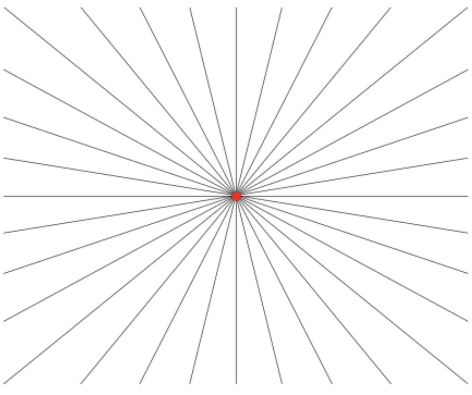
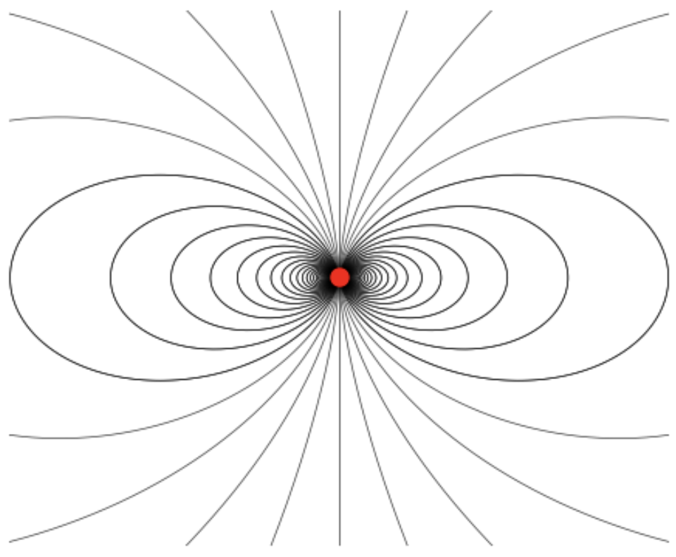
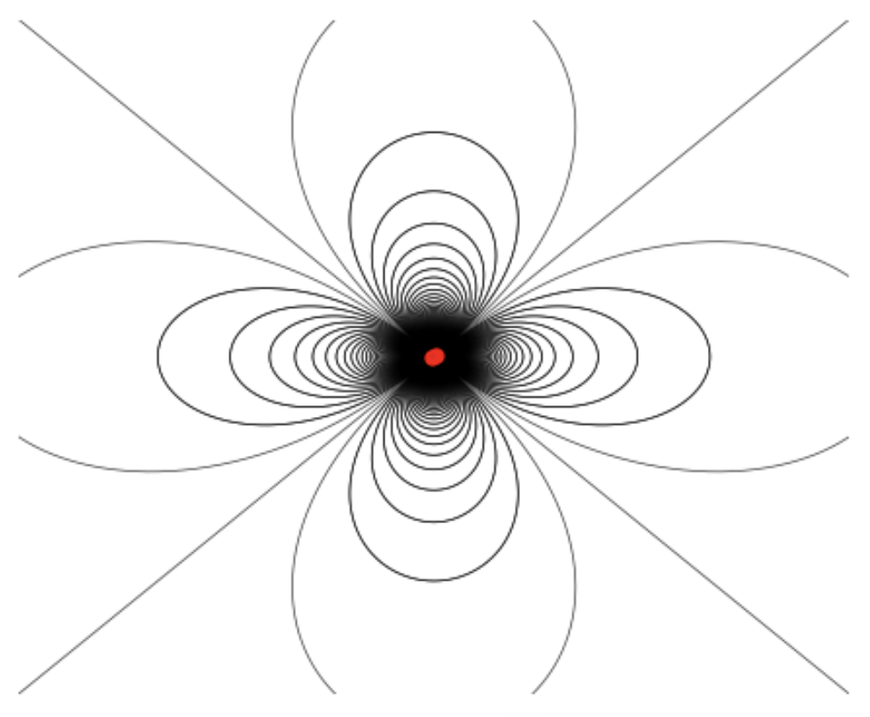

Boundary Value Problems III
In this last chapter on boundary value problems in electrostatics, we will conclude our discussion of boundary value problems by discussing briefly the applications of complex methods to solving Laplace’s equation in two dimensions. We will then move on to the discussion of the multipole expansion of electrostatics, a way to obtain approximate solutions to electrostatics problems. The idea of a multipole expansion turns out to be very useful not just in electrostatics, but in all of electromagnetism. We’ll see extensions of these ideas to other areas of electromagnetism in future chapters.
Complex Methods
In many cases we find ourselves interested in boundary value problems that can be reduced to two dimensions, that is, problems that can be reduced to two variables. For example, if the symmetry of a problem dictates that the potential cannot depend on the \(z\)-coordinate, we can write \(\phi(\mathbf{x}) = \phi(x,y)\), which reduces the problem to a two dimensional problem in the \(xy\)-plane.
While the techniques we’ve covered so far we’ll often work in this setting, there’s another technique that can be used to solve more difficult problems that employs the tools of complex analysis, particular the theory of analytic functions and conformal mappings. We covered the mathematical background of this subject in the appendix. It’s recommend that the reader read that material before proceeding further with this section.
Complex Potential
Suppose \(\phi(\mathbf{x}) = \phi(x,y)\) is the 2-dimensional scalar potential for some boundary value problem free of source charges. Then we know that the potential must satisfy Laplace’s equation \(\nabla^2 \phi = 0\) inside the boundary region. We know from the appendix that any harmonic function in two dimensions can be thought of as the real part of some analytic function in the complex plane.
We can thus use the potential \(\phi(x,y)\) to define a complex-valued analytic function \(F(z)\) of the form \[ F(z) = \phi(x,y) + i \psi(x,y) \ , \] where \(z = x + i y\) is a complex variable whose real part is \(x\) and whose imaginary part is \(y\), and \(\psi(x,y)\) is the harmonic conjugate of the potential. We call \(F(z)\) the complex potential, and \(\psi(x,y)\) the stream function.
Since \(F(z)\) is analytic inside the boundary region, we know that it must satisfy the Cauchy-Riemann equations in this region, \[ \frac{\partial \phi}{\partial x} = \frac{\partial \psi}{\partial y} \quad , \quad \frac{\partial \phi}{\partial y} = -\frac{\partial \psi}{\partial x} \ . \] Moreover, the potential \(\phi(x,y)\) and the stream function \(\psi(x,y)\) must each satisfy Laplace’s equation inside the boundary region, \[ \nabla^2 \phi(x,y) = 0 \quad , \quad \nabla^2 \psi(x,y) = 0 \ . \] Since the stream function is the harmonic conjugate of the potential, we can express it formally as a function of the potential by \[ \psi(x,y) = -\int dx \ \frac{\partial \phi}{\partial y} + \int dy \ \frac{\partial \phi}{\partial x} \ . \] Indeed, this relationship follows directly from the Cauchy-Riemann equations. This means that the stream function is completely determined by the potential, up to additive constants.
We also know that the level curves of \(\phi(x,y)\), i.e. the equipotentials, must be perpendicular to the level curves of \(\psi(x,y)\) in this region, or equivalently \(\nabla \phi \cdot \nabla \psi = 0\). This lets us assign meaning to the stream function. The level curves of the stream function represent the direction of flow of electric field lines. To see why this is true, observe we can take the gradient of \(\psi(x,y)\) and express it directly in terms of the electric field \(\mathbf{E} = -\nabla \phi\) using the Cauchy-Riemann equations. We have \[ \nabla \psi = \frac{\partial \psi}{\partial x} \mathbf{e}_x + \frac{\partial \psi}{\partial y} \mathbf{e}_y = -\frac{\partial \phi}{\partial y} \mathbf{e}_x + \frac{\partial \phi}{\partial x} \mathbf{e}_y = E_y \mathbf{e}_x - E_x \mathbf{e}_y \ . \] That is, we have \[ \mathbf{E}(x,y) = \frac{\partial \psi}{\partial y} \mathbf{e}_x - \frac{\partial \psi}{\partial x} \mathbf{e}_y \ . \] Since \(\nabla \psi\) is perpendicular to the level curves of \(\psi(x,y)\), and since \(\mathbf{E} \cdot \nabla \psi = 0\), it must be the case that the electric field lines point along the level curves of the stream function.
We can also express the electric field directly in terms of a the complex derivative of the complex potential \(F(z)\). Using the properties of complex derivatives, we can write \[ \frac{dF}{dz} = \frac{\partial \phi}{\partial x} - i \frac{\partial \phi}{\partial y} = -E_x + i E_y \ . \] Notice if we then take the negative complex conjugate of this derivative, we get a function whose real and imaginary parts are the components of the electric field, \[ -\bigg(\frac{dF}{dz}\bigg)^* = E_x + i E_y \ . \] This is just the complex equivalent of the statement that the electric field is the negative gradient of the potential.
Example: Complex potential of an infinite uniformly charged wire
Consider again an infinitely long wire of uniform charge line density \(\lambda\) oriented along the \(z\)-axis. We know the electric field is given in cylindrical coordinates by \[ \mathbf{E}(\mathbf{x}) = \frac{2\lambda}{\varrho} \mathbf{e}_\varrho \ , \] which implies that the potential is \[ \phi(\mathbf{x}) = -2\lambda \log\varrho \ . \] We’d like to find the complex potential \(F(z)\) for this wire in the \(xy\)-plane. We can then write the ordinary potential in the form \[ \phi(x,y) = -\lambda \log(x^2 + y^2) \ . \] Away from the wire, the potential must satisfy Laplace’s equation \(\nabla^2 \phi(x,y) = 0\). The associated stream function \(\psi(x,y)\) can most easily be found by applying the Cauchy-Riemann equations to \(\phi(x,y)\). We have \[ \begin{align*} \frac{\partial \psi}{\partial y} &= \frac{\partial \phi}{\partial x} = -2\lambda \frac{x}{x^2 + y^2} \ , \\ \frac{\partial \psi}{\partial x} &= -\frac{\partial \phi}{\partial y} = 2\lambda \frac{y}{x^2 + y^2} \ . \end{align*} \] Integrating both sides of these equations, we then get \[ \begin{align*} \psi(x,y) &= -2\lambda \int dy \ \frac{x}{x^2 + y^2} = -2\lambda \tan^{-1} \frac{y}{x} + c_1(x) \ , \\ \psi(x,y) &= 2\lambda \int dx \ \frac{y}{x^2 + y^2} = 2\lambda \tan^{-1} \frac{x}{y} + c_2(y) \ . \end{align*} \] Now, observe that we can use a trig identity to write \[ \tan^{-1} \frac{x}{y} = \frac{\pi}{2} - \tan^{-1} \frac{y}{x} \ . \] This means we must have \[ \psi(x,y) = -2\lambda \tan^{-1} \frac{y}{x} + c_1(x) = 2\lambda \bigg(\frac{\pi}{2} - \tan^{-1} \frac{y}{x}\bigg) + c_2(y) \ . \] For these equations to be consistent, we require that \(c_1(x)\) and \(c_2(y)\) both be constant, with \(c_1 = \pi\lambda + c_2\). Any choice of constants will work so long as this equation is satisfied. We’ll choose \(c_1=0\), so that the stream function can be written \[ \psi(x,y) = -2\lambda \tan^{-1} \frac{y}{x} \ . \] This means the complex potential is then \[ F(z) = \phi(x,y) + i \psi(x,y) = -\lambda \log(x^2 + y^2) - i \ 2\lambda \tan^{-1} \frac{y}{x} \ . \] We can rewrite this as an explicit function of \(z = x+iy\) by observing that in polar coordinates we have \[ \log z = \log |z| e^{i\varphi} = \log(|z|) + i \varphi = \frac{1}{2} \log(x^2 + y^2) + i \tan^{-1} \frac{y}{x} \ . \] Plugging this into the complex potential and simplifying, we finally get \[ F(z) = -2 \lambda \log z \ . \] Surprisingly, the complex potential looks almost identical to the ordinary potential, except with \(\varrho\) replaced by \(z\).
It’s worth mentioning another interesting fact. Notice that in calculating the complex potential for the wire that we’re only looking at the projection of the wire onto the \(xy\)-plane. Since the wire is oriented along the \(z\)-axis, its projection must be a point charge. This means that the complex potential of a point charge in two dimensions is exactly the same as the complex potential of an infinitely long wire. Indeed, the 2-dimensional Green’s function for a point charge \(q\) at the origin is \(G(\mathbf{x}) = -2 \log \varrho\), which means its potential is \(\phi(\mathbf{x}) = -2q \log\varrho\). If we thus set \(q = \lambda\) then the two potentials are evidently identical.
Conformal Mappings
Now, recall that we can also think of any complex function as a geometric transformation acting on the complex plane. That is, any complex function \(w = T(z)\) can be thought of as mapping points \(z = x + iy\) in the \(z\)-plane to points \(w = u+iv\) in the \(w\)-plane. When \(T(z)\) is analytic in some region of the \(z\)-plane, these transformations are called conformal mappings. Conformal mappings can be shown to preserve the angles between curves under mapping. Moreover, under a conformal mapping the area element \(da = dxdy\) merely gets rescaled to a new area element \(da' = dudv\) by \[ du dv = \bigg|\frac{dw}{dz}\bigg|^2 dxdy \ . \] Most importantly for our purposes, conformal mappings preserve harmonic functions. That is, if \(\phi(u,v)\) is some function that satisfies Laplace’s equation in the \(w\)-plane, then \(\phi(x,y) = \phi\big(u(x,y), v(x,y)\big)\) satisfies Laplace’s equation in the original \(z\)-plane, and the boundary conditions are preserved under the transformation \(w = T(z)\).
Let’s first prove the first part. Suppose \(\phi(u,v)\) is harmonic in some region of the \(w\)-plane, meaning inside this region it satisfies Laplace’s equation with respect to \(u\) and \(v\), \[ \frac{\partial^2 \phi}{\partial u^2} + \frac{\partial^2 \phi}{\partial v^2} = 0 \ . \] Since \(\phi(u,v)\) is harmonic, it must be the real part of some analytic function \(F(w) = \phi(u,v) + i\psi(u,v)\) in the \(w\)-plane. And since the composition of analytic functions is also analytic, then the function \[ F(T(z)) = \phi\big(u(x,y), v(x,y)\big) + i \psi\big(u(x,y), v(x,y)\big) \] must also be analytic in some region of the \(z\)-plane. In particular, this means the function \(\phi(x,y) = \phi\big(u(x,y), v(x,y)\big)\) must also be harmonic in this region of the \(z\)-plane, hence satisfying Laplace’s equation with respect to \(x\) and \(y\), \[ \frac{\partial^2 \phi}{\partial x^2} + \frac{\partial^2 \phi}{\partial y^2} = 0 \ . \] We’ll now prove the second part, namely that conformal mappings preserve the boundary conditions. We’ll focus on the usual cases where we have Dirichlet or Neumann boundary conditions. The mixed boundary condition case follows from these.
Suppose \(\mathcal{C}_z\) is some smooth curve in the \(z\)-plane that under the conformal mapping \(w=T(z)\) maps to another smooth curve \(\mathcal{C}_w\) in the \(w\)-plane. Suppose first that \(\phi(u,v) = \phi_0\) is constant along the curve \(\mathcal{C}_w\) in the \(w\)-plane. Clearly then, we have \[ \phi(x,y) = \phi\big(u(x,y), v(x,y)\big) = \phi_0 \ . \] That is, \(\phi(x,y)\) will also be constant along the curve \(\mathcal{C}_z\) in the \(z\)-plane. This proves that Dirichlet boundary conditions are preserved under a conformal mapping.
Suppose next that \(\partial \phi / \partial n_w = 0\) along the curve \(\mathcal{C}_w\) in the \(w\)-plane, where \(\mathbf{n}_w\) is the normal vector to this curve. Since \[ \frac{\partial \phi}{\partial n_w} = \nabla \phi(u,v) \cdot \mathbf{n}_w = 0 \ , \] this can only be true if the curve \(\mathcal{C}_w\) is perpendicular to the level curves of \(\phi(u,v)\) in the \(w\)-plane. However, the level curves of \(\phi(u,v)\) are the same as the level curves of \(\phi(x,y) = \phi\big(u(x,y), v(x,y)\big)\), since constants get mapped to constants under the conformal mapping. This means in the \(z\)-plane that the level curves of \(\phi(x,y)\) will again be perpendicular to the curve \(\mathcal{C}_z\). That is, if \(\mathbf{n}_z\) is the normal vector to the curve \(\mathcal{C}_z\) we must have \[ \frac{\partial \phi}{\partial n_z} = \nabla \phi\big(u(x,y), v(x,y)\big) \cdot \mathbf{n}_z = 0 \ . \] This proves that Neumann boundary conditions are preserved under a conformal mapping. By combining these results together, it’s possible to show that mixed boundary conditions are also preserved under conformal mappings.
2D Boundary Value Problems
The results of the previous section mean that, given some conformal mapping, we essentially have a duality between BVPs in the \(xy\)-plane and BVPs in the \(uv\)-plane. If we can somehow find such a conformal mapping that simplifies the problem so that it’s much easier to solve in the new space using any of the techniques we’ve covered so far, we can map it back to get the potential that solves the original BVP.
Of course, the challenging part is finding a conformal mapping \(w = T(z)\) that simplifies the given problem. There’s an art to this, involving looking at the geometry of the original problem and using that to identify a good transformation that makes the problem easier to solve in a new space. This is best shown by example.
Let’s start with a relatively simple BVP that we can solve using methods we’ve already covered.
Example: Long hollow cylinder held at two different potentials
Suppose an infinitely long hollow cylinder of radius \(R\) is such that exactly half of the circular cross-section of the cylinder is held at a constant potential \(V\), while the other half is grounded. We’ll assume each half of the cylinder is separated by a very thin insulating sheet. We’ll assume that no other source charges are present inside our outside the cylinder. We’re interested in finding the potential at each point inside of the cylinder.
FIGURE (show cylinder with given potentials)
Inside the cylinder the potential must satisfy Laplace’s equation. We’ll formulate this problem as a BVP in Cartesian coordinates, \[ \begin{align*} \begin{cases} \nabla^2 \phi(x,y) = 0 \ , \\ \text{where} \ \phi(x,y) = 0 \ \text{when} \ x^2+y^2 = R^2 \ \text{and} \ x > 0 \ , \\ \text{and} \ \phi(x,y) = V \ \text{when} \ x^2+y^2 = R^2 \ \text{and} \ x < 0 \ . \end{cases} \end{align*} \] We’ll solve this problem two different ways to show that the results agree, first using separation of variables, and second using conformal mappings.
First, recall from the previous chapter that any BVP with cylindrical symmetry, as this problem does, has a solution in cylindrical coordinates of the form \[ \phi(\varrho,\varphi) = a_0 + b_0 \log\varrho + \sum_{n=1}^\infty \big[(a_n \cos n\varphi + b_n \sin n\varphi)\varrho^n + (c_n \cos n\varphi + d_n \sin n\varphi)\varrho^{-n}\big] \ . \] For the potential to stay finite inside the cylinder we require that \(b_0 = c_n = d_n = 0\). What remains then is a Fourier series, \[ \phi(\varrho,\varphi) = a_0 + \sum_{n=1}^\infty (c_n \cos n\varphi + d_n \sin n\varphi)\varrho^{-n} \ . \] The coefficients can be found using standard Fourier series methods. By applying the boundary conditions, one can show that \(a_0 =V/2\), \(a_n=0\) for all \(n\), and \(b_n=0\) for all even \(n\), while for odd \(n\) we have \[ b_n = -\frac{2V}{n\pi R^n} \quad , \quad n=1,3,5,\cdots \ . \] Plugging these in, we get \[ \phi(\varrho,\varphi) = \frac{V}{2} - \frac{2V}{\pi} \sum_{n=1,3,5,\cdots} \bigg(\frac{\varrho}{R}\bigg)^n \frac{\sin n\varphi}{n} \ . \] It turns out this solution can also be written in closed form by using the Taylor expansion of the arctangent function. We get \[ \phi(\varrho,\varphi) = \frac{V}{2} - \frac{V}{\pi} \tan^{-1} \frac{2R\varrho \sin\varphi}{R^2 - \varrho^2} \ . \] Let’s now show that we get the same result using conformal mappings. Since the problem is cylindrically symmetric, we know that the solution must only depend on \(x\) and \(y\). Suppose then that we seek a potential \(\phi(x,y)\), where \(x\) and \(y\) are the real and imaginary components of a complex variable \(z\). Our goal is to find a conformal mapping \(w = T(z)\) that makes \(\phi(u,v)\) especially easy to write down in the \(w\)-plane. To that end, consider the following conformal mapping, \[ w = -i \frac{z-R}{z+R} \ . \] By writing \(w = u(x,y) + iv(x,y)\) and simplifying this expression, it’s not hard to show that \[ u = \frac{2Ry}{(x+R)^2 + y^2} \quad , \quad v = \frac{R^2 - x^2 - y^2}{(x+R)^2 + y^2} \ . \] To see why this is a useful conformal mapping to consider, let’s look at how the boundary cylinder transforms under the transformation. In the \(z\)-plane, the boundary cylinder can be parametrized by \(z(\varphi) = R e^{i\varphi}\), where \(-\pi \leq \varphi \leq \pi\). Under the transformation \(w=T(z)\), the cylinder transforms to a curve in the \(w\)-plane of the form \[ w(\varphi) = -i \frac{z(\varphi)-R}{z(\varphi)+R} = -i \frac{R e^{i\varphi}-R}{R e^{i\varphi}+R} = -i \frac{e^{i\varphi}-1}{e^{i\varphi}+1} \ . \] By multiplying the numerator and denominator by \((e^{i\varphi}+1)^* = e^{-i\varphi}+1\) and simplifying, it’s not hard to show that \[ w(\varphi) = \frac{\sin\varphi}{1 + \cos\varphi} = \tan \frac{\varphi}{2} \ . \] This means the cylinder transforms to the curve \(u(\varphi) = \tan \varphi / 2\) and \(v(\varphi) = 0\) in the \(w\)-plane. Clearly this is just the real axis in the \(w\)-plane. When \(-\pi < \varphi < 0\) the curve runs from \(u=-\infty\) to \(u=0\), and when \(0 < \varphi < \pi\) the curve runs from \(u=0\) to \(u=\infty\). What we’ve managed to do with this conformal mapping is transform the surface of the cylinder in the \(z\)-plane into the \(u\)-axis in the \(w\)-plane. Moreover, the interior of the cylinder in the \(z\)-plane gets mapped to the upper half of the \(w\)-plane.
What about the boundary conditions? If \(\phi(x,y) = 0\) on the cylinder when \(x > 0\), under the conformal mapping we must have \(\phi(u,0) = 0\) when \(u > 0\). Similarly, if \(\phi(x,y) = V\) on the cylinder when \(x < 0\), we must have \(\phi(u,0) = V\) when \(u < 0\). The points \(x = \pm R\) in the \(z\)-plane where these two parts of the cylinder joint both map to \(w = 0\). In the figure below we show a visualization of this mapping, including the boundary conditions.
FIGURE (show this conformal mapping with BCs included)
We now have an equivalent BVP to solve in the \(w\)-plane, \[ \begin{align*} \begin{cases} \nabla^2 \phi(u,v) = 0 \ , \\ \text{where} \ \phi(u,0) = 0 \ \text{when} \ u > 0 \ , \\ \text{and} \ \phi(u,0) = V \ \text{when} \ u < 0 \ . \end{cases} \end{align*} \] So how do we find such a potential? The trick is to find a function \(\phi(w) = \phi(u,v)\) that’s analytic in the upper half-plane while also satisfying the boundary conditions. If the function is analytic we know it must satisfy Laplace’s equation, and if it satisfies the boundary conditions we know it must be the unique solution. To that end, let’s try to guess a solution. Consider the function \[ \phi(w) = \frac{V}{\pi} \text{Arg} \ w \ , \] where \(\text{Arg} \ w\) is the phase of \(w\), or equivalently the angle of the point \(w = u+iv\) in the \(w\)-plane relative to the positive \(u\)-axis. First, notice that \(\phi(w)\) satisfies the boundary conditions, since \(\text{Arg} \ w = 0\) along the positive \(u\)-axis and \(\text{Arg} \ w = \pi\) along the negative \(u\)-axis. Moreover, the function is analytic in the upper half plane \(v > 0\) since \(f(w) = \text{Arg} \ w\) is analytic when \(v > 0\). This guarantees that \(\phi(w) = \phi(u,v)\) satisfies Laplace’s equation in the upper half plane. By the uniqueness theorem then, this must be the unique solution that solves the given BVP in the \(w\)-plane.
We now need only transform back to the \(z\)-plane to get the original potential \(\phi(x,y)\) we seek. To do this we need to express the phase \(\text{Arg} \ w\) as a function of \(x\) and \(y\). Since the phase of a product is the sum of their phases, we have \[ \text{Arg} \ w = \text{Arg} \bigg(-i \frac{z-R}{z+R}\bigg) = \text{Arg} \ i - \text{Arg} \ \frac{z-R}{z+R} \ . \] Now, \(\text{Arg} \ i = \pi/2\), and the phase of the second term is just the arctangent of its imaginary part divided by its real part, which turns out to be given by \[ \text{Arg} \ \frac{z-R}{z+R} = \tan^{-1} \frac{2yR}{R^2 - x^2 - y^2} \ . \] Plugging this back into the potential, we have \[ \phi(x,y) = \frac{V}{\pi} \bigg[\frac{\pi}{2} - \tan^{-1} \frac{2yR}{R^2 - x^2 - y^2}\bigg] \ . \] Or, expressed in cylindrical coordinates, we have \[ \phi(\varrho,\varphi) = \frac{V}{2} - \frac{V}{\pi} \tan^{-1} \frac{2R \varrho\sin\varphi}{R^2 - \varrho^2} \ . \] This is of course exactly the result we found above using separation of variables. It’s fair to ask if the use of complex methods made this problem any easier than just using separation of variables. In one sense, we replaced the need to solve a PDE with the algebra of complex variables. But in another sense we needed to be a lot more clever. For complex methods to be useful we need to be able to guess a conformal mapping that simplifies the problem. In this case we were able to do that, but it’s not always so obvious how to even find such a mapping. There are, however, problems that are much harder to solve using other methods where complex methods happen to be quite helpful. We’ll see an example of this next.
Example:
- Work capacitor example or something just as complex.
Multipole Moments
We will now turn our attention away from boundary value problems and consider again the problem of a localized charge distribution sitting somewhere in space, free of boundary surfaces like conductors or whatever. We know that in this setting we can formally express the potential as an integral \[ \phi(\mathbf{x}) = \int d^3\mathbf{x}' \frac{\rho(\mathbf{x}')}{|\mathbf{x} - \mathbf{x}'|} \ . \] The hard part is actually solving this integral for a general charge distribution \(\rho(\mathbf{x}')\). It would be nice then if we could find a systematic way to approximate the potential as a series in inverse powers of the distance of the field point from the charge distribution. Provided we can find such an expansion, we can often find a good approximate solution when we’re far away from the source charges by considering the first few expansion terms. This sort of expansion is called a multipole expansion.
Cartesian Multipole Expansion
Based on intuition and past examples, we expect that very far away from the charge distribution the potential should be approximately that of a point charge, falling off like \(1/r\) when \(r \gg r'\). But we’ve also seen potentials that fall off like \(1/r^2\) as well. In fact, we can find charge distributions with potentials that fall off like \(1/r^n\) for any positive integer \(n\).
Since only the only part of the integrand that depends on the field point \(\mathbf{x}\) is the Green’s function \(1/|\mathbf{x} - \mathbf{x}'|\), it suffices to find an expression of the Green’s function in powers of \(1/r\). Provided we can do this, we can plug the expansion back into the integral formula for the potential and get an expansion for the potential in powers of \(1/r\).
Suppose \(\alpha\) is the angle between the vectors \(\mathbf{x}\) and \(\mathbf{x}'\), i.e. \(\mathbf{x} \cdot \mathbf{x}' = rr' \cos \alpha\). We can then rewrite the Green’s function as \[ \frac{1}{|\mathbf{x} - \mathbf{x}'|} = \frac{1}{\sqrt{r^2 + r'^2 - 2 rr' \cos\alpha}} = \frac{1}{r} \frac{1}{\sqrt{1 + \varepsilon^2 - 2 \varepsilon \cos\alpha}} \ , \] where \(\varepsilon \equiv r'/r\). We expect \(\varepsilon\) to be small in the far field limit \(r \gg r'\), which means it suffices to look at only the first few expansion terms. We can then do a binomial expansion of the Green’s function in powers of \(\varepsilon^2 - 2 \varepsilon \cos\alpha\) to get \[ \frac{1}{|\mathbf{x} - \mathbf{x}'|} = \frac{1}{r} \bigg[1 - \frac{1}{2} (\varepsilon^2 - 2\varepsilon \cos\alpha) + \frac{3}{8} (\varepsilon^2 - 2\varepsilon \cos\alpha)^2 - \frac{5}{16} (\varepsilon^2 - 2\varepsilon \cos\alpha)^3 + \cdots \bigg] \ . \] Collecting terms in powers of \(\varepsilon\) and substituting back in \(\varepsilon = r'/r\) we then get \[ \frac{1}{|\mathbf{x} - \mathbf{x}'|} = \frac{1}{r} + \cos\alpha \frac{r'}{r^2} + \frac{1}{2} (3 \cos^2\alpha - 1) \frac{r'^2}{r^3} + \cdots \ . \] Finally, plugging this expansion of the Green’s function back into the potential, we get \[ \phi(\mathbf{x}) = \int d^3\mathbf{x}' \ \rho(\mathbf{x}') \bigg[\frac{1}{r} + \cos\alpha \frac{r'}{r^2} + \frac{1}{2} (3 \cos^2\alpha - 1) \frac{r'^2}{r^3} + \cdots\bigg] \ . \] For reasons we’ll explain below, we define \[ \begin{align*} q &\equiv \int d^3\mathbf{x}' \ \rho(\mathbf{x}') \ , \\ \mathbf{p} &\equiv \int d^3\mathbf{x}' \ \rho(\mathbf{x}') \mathbf{x}' \ , \\ \mathbf{Q} &= \int d^3\mathbf{x}' \ \rho(\mathbf{x}') \bigg[3 \mathbf{x}' \otimes \mathbf{x}' - r'^2 \mathbf{1}\bigg] \ . \end{align*} \] The first quantity \(q\) is clearly a scalar. The second quantity \(\mathbf{p}\) is evidently a vector. The last quantity \(\mathbf{Q}\) is a rank-2 tensor. Its integrand contains an outer product of \(\mathbf{x}'\) with itself, along with a term proportional to the rank-2 identity tensor \(\mathbf{1}\). Each of these quantities we’ve defined are called multipole moments. They’re called moments because they can each be thought of as the integral of a charge density times a power of \(\mathbf{x}'\), similar to how the moments of a probability distribution are integrals of a probability distribution times powers of a random variable.
If we substitute these moments into the expansion, it’s possible to show that we can rewrite the expansion as \[ \phi(\mathbf{x}) = \frac{q}{r} + \frac{\mathbf{p} \cdot \mathbf{e}_r}{r^2} + \frac{\mathbf{e}_r \cdot \mathbf{Q} \cdot \mathbf{e}_r}{2r^3} + \cdots \ . \] We’ll show how to rewrite the expansion using these moments in the sections below. For now, notice if we let \(\mathbf{e}_r = \mathbf{x}/r\), we can rewrite the expansion in its more common form, \[ \boxed{ \phi(\mathbf{x}) = \frac{q}{r} + \frac{\mathbf{p} \cdot \mathbf{x}}{r^3} + \frac{\mathbf{x} \cdot \mathbf{Q} \cdot \mathbf{x}}{2r^5} + \cdots } \ . \] This expansion is called the Cartesian multipole expansion, or more precisely the first few terms of the multipole expansion. In principle we could continue the expansion indefinitely using higher and higher multipole moments. We’ll do that later. Notice that all of the dependence on the source charge distribution is evidently contained in the multipole moments, leaving explicit any terms that depend on the field point.
Let’s now look at each of these expansion terms one by one and study their moments.
Monopole Moment
Substituting in the definition for the first multipole moment \(q\), we can write the first term in the multipole expansion as \[ \phi_0(\mathbf{x}) = \frac{1}{r} \int d^3\mathbf{x}' \ \rho(\mathbf{x}') = \frac{q}{r} \ . \] We call this first term in the expansion the monopole potential. Clearly it falls off like \(1/r\). The multipole moment \(q\) is called the monopole moment. Evidently, the monopole moment is just the total net charge \(q\) of the distribution, \[ q \equiv \int d^3\mathbf{x}' \ \rho(\mathbf{x}') \ . \] Thus, the first term in the expansion is just \(q/r\). This is exactly what we’d expect. Since the electric field is always given by \(\mathbf{E} = -\nabla \phi\), the electric field of the monopole potential will be given by Coulomb’s Law, with \[ \mathbf{E}_0(\mathbf{x}) = \frac{q}{r^2} \mathbf{e}_r \ . \] The field lines for the monopole look exactly as we’d expect. We show a plot of these field lines below to compare with the field lines of the higher order multipole terms in the next few sections. As usual, the field lines are assume to point outward for a positive point charge, and inward for a negative point charge.

Since this is the first term in the multipole expansion, we should expect that very far away from the charge distribution, the potential should approximate the of a point charge with total net charge \(q\). Of course, this is only true provided the net charge isn’t zero. If it is, we have to proceed to the next term in the multipole expansion, the dipole term.
Dipole Moment
Substituting in the definition for the second multipole moment \(\mathbf{p}\), we can write the second term in the multipole expansion as \[ \phi_1(\mathbf{x}) = \frac{1}{r^2} \int d^3\mathbf{x}' \ \rho(\mathbf{x}') \cos\alpha r' = \frac{\mathbf{p} \cdot \mathbf{e}_r}{r^2} = \frac{\mathbf{p} \cdot \mathbf{x}}{r^3} \ . \] In making this substitution we just used the fact that \(\mathbf{x} \cdot \mathbf{x}' = rr' \cos \alpha\) to replace the \(\cos\alpha\) term in the integrand, which lets us pull out a factor of \(\mathbf{x}/r\) from the integrand since the integral is over \(\mathbf{x}'\).
We call this expansion term the dipole potential. This potential clearly falls off like \(1/r^2\). What remains is the multipole moment \(\mathbf{p}\), which encapsulates all of the information about the charge distribution. We call this moment the dipole moment, \[ \mathbf{p} \equiv \int d^3\mathbf{x}' \ \rho(\mathbf{x}') \mathbf{x}' \ . \] As defined, the dipole moment evidently has dimensions of charge times distance. In particular, this means we should always expect the components of the dipole moment to go like \(qd\), where \(d\) is some characteristic length scale.
But why do we call it the dipole moment? We’ve seen the dipole before, or more precisely the physical dipole. To recall, suppose we have two opposite point charges \(q\) and \(-q\) separated from each other by a distance \(d\). Suppose the charges are centered on the \(z\)-axis with charge \(q\) at position \(\mathbf{x}_+ = d/2 \mathbf{e}_z\) and charge \(-q\) at position \(\mathbf{x}_- = -d/2 \mathbf{e}_z\). We can then use the superposition principle to express the potential of the physical dipole as \[ \phi(\mathbf{x}) = \frac{q}{|\mathbf{x} - d/2 \mathbf{e}_z|} - \frac{q}{|\mathbf{x} + d/2 \mathbf{e}_z|} \ . \] Rewriting the denominators in Cartesian coordinates, we can then write \[ \phi(\mathbf{x}) = \frac{q}{\sqrt{x^2 + y^2 + (z-d/2)^2}} - \frac{q}{\sqrt{x^2 + y^2 + (z+d/2)^2}} \ . \] Here is a plot of what the field lines look like for the physical dipole, with \(+q\) shown in red and \(-q\) in blue. As always, the field lines go from positive charges to negative charges, and the equipotential curves are tangent to the field lines.

This is the exact expression for the potential of the physical dipole. Clearly it doesn’t look at all like the expression for the dipole potential though. In fact, the dipole potential is just an approximation of the physical dipole potential in the far field limit. To see this, suppose we’re far away from the two charges, so that \(r \gg d\). Then we can do a binomial expansion of the roots to write $$ \[\begin{align*} \phi(\mathbf{x}) &= q \bigg[\big(x^2 + y^2 + (z-d/2)^2\big)^{-1/2} - \big(x^2 + y^2 + (z+d/2)^2\big)^{-1/2}\bigg] \\ &\approx \frac{q}{r} \bigg[\big(1-dz/r\big)^{-1/2} - \big(1+dz/r\big)^{-1/2}\bigg] \\ &\approx \frac{q}{r} \big[(1 + dz/2r) - (1 - dz/2r)\big] \\ &\approx \frac{qdz}{r^2} \ . \end{align*}\] $$
We now have a potential that falls off like \(1/r^2\). If we define \(\mathbf{p} = qd \mathbf{e}_z\), in the far field limit we can express this potential as \[ \phi(\mathbf{x}) \approx \phi_1(\mathbf{x}) = \frac{\mathbf{p} \cdot \mathbf{x}}{r^3} \ , \] which is of course the dipole potential. It’s conventional to define a vector \(\mathbf{d} = d\mathbf{e}_z\) and write the dipole moment for the physical dipole as \(\mathbf{p} = q \mathbf{d}\). Writing the dipole moment this way allows us to remove the requirement that the charges lie on the \(z\)-axis.
We can model the behavior of the physical dipole in the far field limit in a slightly different way by considering an idealized physical dipole where we let \(d \to 0\) while keeping \(qd\) finite. This pushes the charges right on top of each other, giving an identical result to the far field dipole potential above. We call this idealized dipole configuration the pure dipole. The pure dipole is exactly the configuration that gives us the dipole potential in the multipole expansion.
Here is a plot of what the field lines of a pure dipole look like. Since the charges are right on top of each other in this case we show them both in red. Notice that these look just like the field lines of the physical dipole when far away from the charges. However, the field lines do look different near the charges, since all the higher order terms in the physical dipole potential identically vanish for the pure dipole potential.

The physical dipole helps us assign meaning to what exactly the dipole moment and dipole potential represent. We can think of the dipole moment as representing the charge polarization of the source charge distribution \(\rho(\mathbf{x}')\) along some axis \(\mathbf{d}\). To understand why this is true, suppose \(\rho(\mathbf{x}')\) consists of \(N\) discrete point charges \(q_i\) located at positions \(\mathbf{x}_i\). Then \[ \rho(\mathbf{x}') = \sum_{i=1}^N q_i \delta(\mathbf{x}' - \mathbf{x}_i) \ . \] We will now separate this sum into two sums, one for all the positive charges \(q_i^+\) and one for all the negative charges \(-q_i^-\), \[ \rho(\mathbf{x}') = \rho_+(\mathbf{x}') + \rho_-(\mathbf{x}') = \bigg(\sum_{i=1}^{N_+} q_i^+ \delta(\mathbf{x}' - \mathbf{x}_i^+)\bigg) - \bigg(\sum_{i=1}^{N_-} q_i^- \delta(\mathbf{x}' - \mathbf{x}_i^-)\bigg) \ , \] where \(N_+\) is the number of positive charges and \(N_-\) is the number of negative charges, so that \(N = N_+ + N_-\).
Now, just as a collection of particles has a center of mass, a collection of charges has a center of charge. We can define a center of charge \(\mathbf{x}_\pm\) for the positive and negative charges by \[ \mathbf{x}_\pm \equiv \frac{\sum_{i=1}^{N_\pm} q_i^+ \mathbf{x}_i^\pm}{\sum q_i^\pm} \ , \] On average then, the total positive and negative charges \(q_\pm\) will be separated by some distance \(d = |\mathbf{d}|\), where \(\mathbf{d} = \mathbf{x}_+ - \mathbf{x}_-\). We can model this behavior with a physical dipole with a positive charge \(q_+\) and a negative charge \(-q_-\) separated by a distance \(d\) along the \(\mathbf{d}\)-axis. In the far field limit \(r \gg d\), we get a dipole moment that can be expressed in the form \[ \mathbf{p} = q_+ \mathbf{x}_+ - q_- \mathbf{x}_- \ . \] Notice that in the special case \(q_+ = q_-\), we can simplify this further to get \(\mathbf{p} = q_+ \mathbf{d}\), which is the expression we had above. In this sense then, the dipole moment represents the average charge polarization of charges in a charge distribution.
FIGURE (sketch the dipole situation for a general charge distribution, showing the polarizations)
By writing \(\mathbf{E}_1 = -\nabla \phi_1\) in index notation and plugging in the dipole potential above, while keeping in mind that \(\mathbf{p}\) doesn’t depend on \(\mathbf{x}\), one can show that the electric field for the pure dipole is given by \[ \boxed{ \mathbf{E}_1(\mathbf{x}) = \frac{3(\mathbf{p} \cdot \mathbf{x}) \mathbf{x} - r^2 \mathbf{p}}{r^5} } \ . \] Notice that, while the dipole potential falls off like \(1/r^2\) that, the dipole field falls off like \(1/r^3\), as we’d expect.
Let’s now work an example that involves calculating the dipole moment and potential for some general charge distribution.
Example: Dipole moment of a spherical shell with an azimuthally symmetric charge distribution
Consider a hollow spherical shell of radius \(R\), but instead of having uniform charge density, we have a polar-dependent surface charge density of the form \(\sigma' = k \cos\theta'\). We’d like to find the dipole moment and potential associated with this distribution.
First, notice that this distribution has no net charge, since the monopole moment is \[ q = \int da' \ \sigma' = 2\pi R^2 k \int_0^\pi d\theta' \ \cos\theta' = 0 \ . \] This means the first term in the multipole expansion must be at least a dipole potential. Let’s now calculate the dipole moment. Notice first that the charge density is azimuthally symmetric about the \(z\)-axis. This means the dipole potential must point along the \(z\)-direction, with \(\mathbf{p} = p_z \mathbf{e}_z\). It thus suffices to calculate only the \(p_z\) component of the dipole moment. We have \[ p_z = \int da' \ \sigma' z' = \int_0^\pi R^2 \sin\theta' d\theta' \ k R \cos^2\theta' = \frac{4\pi}{3} k R^3 \ . \] With the dipole moment in hand we can now calculate the dipole potential. Evidently, we have \[ \phi_1(\mathbf{x}) = \frac{\mathbf{p} \cdot \mathbf{x}}{r^3} = \frac{p_z \cos\theta}{r^2} = \frac{4\pi}{3} kR \cos\theta \bigg(\frac{R}{r}\bigg)^2 \ . \] Since there is no monopole moment, this means in the far field limit the full potential can be approximated by \[ \phi(\mathbf{x}) \approx \frac{4\pi}{3} kR \cos\theta \bigg(\frac{R}{r}\bigg)^2 \ . \] In fact, this is the exact potential for this charge distribution. We actually calculated it in the last chapter using separation of variables in spherical coordinates. This means that this charge distribution is already exactly a pure dipole.
We can calculate the associated electric field as well, which is \[ \mathbf{E}(\mathbf{x}) = \frac{3(\mathbf{p} \cdot \mathbf{e}_r) \mathbf{e}_r}{r^3} - \frac{\mathbf{p}} {r^3} = \frac{4\pi}{3} k \bigg(\frac{R}{r}\bigg)^3 \bigg(3\cos\theta \mathbf{e}_r - \mathbf{e}_z\bigg) \ . \] As expected, the electric field falls off like \(1/r^3\), with field lines coming out from the top of the sphere (which we can think of as a \(+q\) charge, and going into the bottom of the sphere (which we can think of as a \(-q\) charge).
FIGURE (sketch the field lines of this sphere, showing it looks like a dipole)
Quadrupole Moment
Finally, let’s look at the quadratic term in the multipole expansion, which can be written \[ \phi_2(\mathbf{x}) \equiv \frac{1}{2r^3} \int d^3\mathbf{x}' \ \rho(\mathbf{x}') (3 \cos^2\alpha - 1) r'^2 \ . \] This term in the multipole expansion is called the quadrupole potential. Recall above that we also defined the multipole moment \[ \mathbf{Q} = \int d^3\mathbf{x}' \ \rho(\mathbf{x}') \bigg[3 \mathbf{x}' \otimes \mathbf{x}' - r'^2 \mathbf{1}\bigg] \ . \] We call this multipole moment the quadrupole moment or the quadrupole tensor. As defined, the quadrupole moment evidently have dimensions of charge times distances squared, or charge times area. In particular, this means we should always expect the components of the quadrupole moment to go like \(qd^2\), where \(d\) is some characteristic length scale.
We’d like to rewrite the quadrupole potential to show its explicit dependence on the quadrupole moment. To do that, we’ll rewrite the quadrupole moment in index notation. In index notation the outer product \(\mathbf{x}' \otimes \mathbf{x}'\) can be written \(x_i' x_j'\) and the identity tensor \(\mathbf{1}\) can be written \(\delta_{ij}\). We thus have \[ Q_{ij} \equiv \int d^3\mathbf{x}' \ \rho(\mathbf{x}') \bigg[3 x_i' x_j' - r'^2 \delta_{ij}\bigg] \ . \] Now, let’s look again at the potential. Observe if we substitute \(\mathbf{x} \cdot \mathbf{x}' = rr' \cos \alpha\) we can write the quadrupole potential as \[ \phi_2(\mathbf{x}) = \frac{1}{2r^3} \int d^3\mathbf{x}' \ \rho(\mathbf{x}') \bigg[3 \bigg(\frac{\mathbf{x} \cdot \mathbf{x}'}{r}\bigg)^2 - r'^2\bigg] \ . \] We’ll go ahead and rewrite this potential in index notation as well, \[ \phi_2(\mathbf{x}) = \frac{1}{2r^3} \int d^3\mathbf{x}' \ \rho(\mathbf{x}') \bigg[3 \frac{(x_i x'_i) (x_j x_j')}{r^2} - r'^2\bigg] \ . \] We want the pull all dependence on \(\mathbf{x}\) out of the integrand. We can do this be factoring \(x_i x_j\) out of the first term, but if we do that we need to insert a \(\delta_{ij}\) into the second term. We then have \[ \phi_2(\mathbf{x}) = \frac{x_i x_j}{2r^5} \int d^3\mathbf{x}' \ \rho(\mathbf{x}') \bigg[3 x_i' x_j' - r'^2 \delta_{ij}\bigg] \ . \] Notice now that the remaining integral is just the \(Q_{ij}\) component of the quadrupole moment. We thus have \[ \phi_2(\mathbf{x}) = \frac{Q_{ij} x_i x_j}{2r^5} \ . \] This is the usual way the quadrupole potential is written. We can also write it in abstract form by observing that \(Q_{ij} x_i x_j\) is just the quadratic form \(\mathbf{x} \cdot \mathbf{Q} \cdot \mathbf{x}\), that is, the inner product of \(\mathbf{x}\) with the vector \(\mathbf{Q} \cdot \mathbf{x}\). We can thus also write \[ \phi_2(\mathbf{x}) =\frac{\mathbf{x} \cdot \mathbf{Q} \cdot \mathbf{x}}{2r^5} \ . \] With the quadrupole potential re-expressed in terms of the quadrupole moment, we’ve completed our derivation of the basic multipole expansion above up to the quadrupole term, \[ \phi(\mathbf{x}) = \frac{q}{r} + \frac{\mathbf{p} \cdot \mathbf{x}}{r^3} + \frac{\mathbf{x} \cdot \mathbf{Q} \cdot \mathbf{x}}{2r^5} + \cdots \ . \] Let’s now say a bit about the properties of the quadrupole moment and what it represents physically. As we already mentioned, the quadrupole moment is indeed a rank-2 tensor. That is, it transforms as a rank-2 tensor under coordinate transformations, \[ Q_{i'j'} = \frac{\partial x_{i'}}{\partial x_i} \frac{\partial x_{j'}}{\partial x_j} Q_{ij} \ . \] Indeed, this follows immediately from the fact that both the outer product and the identity tensor are valid rank-2 tensors, which means any linear superposition of them is also a rank-2 tensor.
It’s also easy to see that the quadrupole moment is symmetric, meaning \(Q_{ij} = Q_{ji}\). This also follows from the fact that the outer product of a vector with itself is symmetric, and the identity tensor is clearly also symmetric. Perhaps less intuitive though, the quadrupole moment is also traceless, meaning \(Q_{ii} = 0\) when summed over \(i\). To see why, observe that \[ Q_{ii} = \int d^3\mathbf{x}' \ \rho(\mathbf{x}') \bigg[3 x_i' x_i' - r'^2 \delta_{ii}\bigg] = \int d^3\mathbf{x}' \ \rho(\mathbf{x}') \bigg[3 r'^2 - 3 r'^2\bigg] = 0 \ . \] Here, we used the fact that \(x_i' x_i'\) is just the inner product \(r'^2 = \mathbf{x}' \cdot \mathbf{x}'\), along with the fact that the trace of the identity is \(\delta_{ii} = 3\) in three dimensions. We’ve thus shown that the quadrupole moment is a symmetric, traceless tensor of rank-2. Such a tensor is usually called an irreducible tensor. These conditions imply that the quadrupole moment only has \(3^2 - 3 - 1 = 5\) independent components, since \(3\) terms in a \(3 \times 3\) symmetric matrix are redundant due to the \(Q_{ij} = Q_{ji}\) requirement, and tracelessness implies that one of the terms in the diagonal depends on the rest, for instance \(Q_{zz} = -Q_{xx}-Q_{yy}\).
As with many rank-2 tensors, it’s common to express the components of the quadrupole moment as a matrix. If we enforce the redundancy requirements above for instance, we can write the quadrupole moment in matrix form as \[ \mathbf{Q} = \begin{pmatrix} Q_{xx} & Q_{xy} & Q_{xz} \\ Q_{xy} & Q_{yy} & Q_{yz} \\ Q_{xz} & Q_{yz} & -Q_{xx} - Q_{yy} \end{pmatrix} \ . \] So what does the quadrupole moment represent physically? As we did with the dipole moment, we’ll consider a simple charge configuration, and show that in a certain limit its potential becomes the quadrupole potential. Consider then a configuration of point charges consisting of two oppositely oriented but parallel physical dipoles. We assume the charges inside each dipole is separated by a distance \(d\), and that the charge on each dipole is separated by the charge on the opposite dipole by the same distance \(d\). This will lead to a configuration of four opposite point charges \(\pm q\) arranged as shown below.
FIGURE
We call this configuration of charges the physical quadrupole. First, notice that the physical quadrupole has no net charge, since all the charges sum to zero. Second, notice it also has no net dipole moment, since it consists of two opposite dipole moments \(\pm q\mathbf{d}\), which cancel each other when added together. These together evidently imply that whatever terms remain in the potential must fall off at least like \(1/r^3\) in the limit \(d \ll r\).
We can write down the exact potential for the physical quadrupole using the principle of superposition. We have \[ \phi(\mathbf{x}) = \frac{q}{|\mathbf{x} - d/2 (\mathbf{e}_y + \mathbf{e}_z)|} - \frac{q}{|\mathbf{x} - d/2 (\mathbf{e}_y - \mathbf{e}_z)|} + \frac{q}{|\mathbf{x} + d/2 (\mathbf{e}_y + \mathbf{e}_z)|} - \frac{q}{|\mathbf{x} - d/2 (\mathbf{e}_z - \mathbf{e}_y)|} \ . \] Written out in Cartesian components, this becomes \[ \begin{align*} \phi(\mathbf{x}) &= \frac{q}{\sqrt{x^2 + (y-d/2)^2 + (z-d/2)^2}} - \frac{q}{\sqrt{x^2 + (y-d/2)^2 + (z+d/2)^2}} \\ &- \frac{q}{\sqrt{x^2 + (y+d/2)^2 + (z-d/2)^2}} + \frac{q}{\sqrt{x^2 + (y+d/2)^2 + (z+d/2)^2}} \ . \end{align*} \] Here is a plot of what the field lines look like for the physical quadrupole. Again, the positive charges are shown in red, and the negative charges in blue. As usual, the equipotentials curves are tangential to the field lines.

We can again proceed as we did with the physical dipole and take a binomial expansion of the roots when \(d \ll r\). The end result of all the algebra is that in the far field limit we can approximate the potential of the physical quadrupole as \[ \phi(\mathbf{x}) \approx \frac{3qd^2 yz}{r^5} \ . \] Evidently, in the far field limit the potential of the physical quadrupole goes like \(1/r^3\), which suggests the lowest expansion term of this potential is a quadrupole potential. However, since this approximation depends on \(yz\), it appears that only the \(Q_{yz}\) and \(Q_{zy}\) components of the quadrupole moment appear to contribute anything to the potential. We can see this by writing \[ \phi(\mathbf{x}) \approx \frac{3d^2 yz}{r^5} = \frac{Q_{yz} yz}{2r^5} + \frac{Q_{zy} zy}{2r^5} \ . \] Evidently, we have \(Q_{yz} = Q_{zy} = 3qd^2\). The remaining components of \(\mathbf{Q}\) all vanish, leaving us with the quadrupole matrix \[ \mathbf{Q} = 3 qd^2\begin{pmatrix} 0 & 0 & 0 \\ 0 & 0 & 1 \\ 0 & 1 & 0 \end{pmatrix} \ . \] Just as we did with the physical dipole, we can model the behavior of the physical quadrupole in the far field limit by considering an idealized physical quadrupole where we let \(d \to 0\) while keeping \(qd\) finite. This will give a potential completely equivalent to that of the physical quadrupole in the far field limit, since the higher order multipole terms all vanish. We call this idealized version of the physical quadrupole the pure quadrupole. The potential of the pure quadrupole is exactly the quadrupole potential.
Just as the physical dipole suggested something about what the dipole moment physically represents, the physical quadrupole suggests something about what the quadrupole moment physically represents. Notice each component of the quadrupole moment above is proportional to \(qd^2\), where \(d\) is the separation distance between the charges. This means the quadrupole moment is saying something about the spread of the charge distribution. The more spread out the distribution is, the higher the quadrupole moment will be.
However, it’s slightly more complicated than this. To see why, recall the uniformly charged hollow sphere of radius \(R\). We showed that outside the sphere its potential is given by \(\phi(\mathbf{x}) = q/r\), where \(q = 4\pi R^2 \sigma\) is the total charge on the sphere. This is an exact result, which evidently means the uniformly charged sphere has only one non-vanishing multipole moment, the monopole moment. This implies that both its dipole moment and quadrupole moment must be zero. Yet, if the quadrupole moment truly represented the spread of the charge distribution, we’d expect its components to go like \(qR^2\).
So what’s going on here? As it turns out, the quadrupole moment also measures the anisotropy of the charge distribution, or how much it deviates from being a sphere. The less spherical the distribution is, the more of a quadrupole moment it will have. We should thus really think of the quadrupole moment as a measure of a charge distribution’s spread and anisotropy.
Let’s now work an example to show how to calculate the quadrupole moment for a slightly more complicated charge distribution.
Example: Uniformly charged ring
Suppose we have a uniformly charged circular ring with radius \(a\) and line charge density \(\lambda\). We’ll assume that the ring is centered at the origin in the \(xy\)-plane. Clearly the ring has a net charge given by \(q = 2\pi a \lambda\), which means its potential must have a monopole contribution. It does not, however, have a dipole moment. This can be seen from symmetry. The ring clearly has no preferred direction in the \(xy\)-plane since it’s circular and uniformly charged, which means it can’t have a dipole moment.
But does it have a quadrupole moment? This isn’t so clear from symmetry alone, so let’s calculate it explicitly. To do so we need to keep in mind we’re working with a one-dimensional distribution, which means \(dq = \lambda d\ell'\). Each component of the quadrupole moment will thus be given by the integral \[ Q_{ij} = \int d\ell' \ \lambda(\mathbf{x}') \bigg[3 x_i' x_j' - r'^2 \delta_{ij}\bigg] \ . \] Along the ring, \(\lambda\) is constant, \(r' = a\) is constant, and the line element is just \(d\ell' = a d\varphi'\). We’re thus left to evaluate \[ Q_{ij} = 3a\lambda \int_0^{2\pi} d\varphi' \ x_i' x_j' - a^3 \lambda \delta_{ij} \int_0^{2\pi} d\varphi' \ . \] The second integral is clearly just \(2\pi a^3 \lambda \delta_{ij}\), or equivalently \(qa^2 \delta_{ij}\). To evaluate the first integral we need to switch to polar coordinates, which means we’ll need to be explicit about which components we’re calculating.
Let’s calculate \(Q_{xx}\) first. Since \(x' = a \cos\varphi'\) and \(\delta_{xx} = 1\), we have \[ \begin{align*} Q_{xx} &= 3a\lambda \int_0^{2\pi} d\varphi' \ a^2 \cos^2\varphi' - 2\pi a^3 \lambda \\ &= 3\pi a^3 \lambda - 2\pi a^3 \lambda \\ &= \pi a^3 \lambda \\ &= \frac{1}{2} qa^2 \ . \end{align*} \] Similarly, it’s easy to see we must get \(Q_{yy} = qa^2 / 2\) as well. The vanishing trace property of the quadrupole tensor then implies we must have \(Q_{zz} = -Q_{xx} - Q_{yy} = -qa^2\) for the remaining diagonal component.
Next, we need to find \(Q_{xy}\). Since \(y' = a\sin\varphi'\) and \(\delta_{xy} = 0\), we have \[ Q_{xy} = 3a\lambda \int_0^{2\pi} d\varphi' \ a^2 \cos\varphi' \sin\varphi' = 0 \ . \] This immediately implies \(Q_{yx} = 0\) as well since the quadrupole tensor is symmetric. Last, observe \(Q_{xz} = Q_{yz} = 0\) since for these components both the first and second integrals must vanish.
We thus have a quadrupole tensor \(\mathbf{Q}\) with non-vanishing terms only along the diagonal, \[ \mathbf{Q} = \frac{1}{2} qa^2\begin{pmatrix} 1 & 0 & 0 \\ 0 & 1 & 0 \\ 0 & 0 & -2 \end{pmatrix} \ . \] With these moments in hand, we can now calculate the multipole expansion for the charged ring, \[ \begin{align*} \phi(\mathbf{x}) &= \frac{q}{r} + \frac{Q_{xx} x^2 + Q_{yy} y^2 + Q_{zz} z^2}{2r^5} + \cdots \\ &= \frac{q}{r} + \frac{qa^2(x^2 + y^2 - 2z^2)}{4r^5} + \cdots \ . \end{align*} \] So how do we know this expansion is correct? One way to check is to calculate the exact potential in some simple direction. In this case, the clear choice is to choose the axis of symmetry, the \(z\)-axis. We can calculate the exact potential along the \(z\)-axis very easily from the integral formula. In fact we did that in the previous chapter, where we got \[ \phi(z) = \frac{q}{\sqrt{a^2 + z^2}} = \frac{q}{z} - \frac{qa^2}{2z^3} + \cdots \ . \] Clearly this agrees with the expansion derived above when \(x = y = 0\). However, the expansion derived above works for any field point, not just those along the \(z\)-axis. Indeed, we already have a good approximation to the potential for the ring when \(r \gg z\). So long as we’re far enough away from the ring the higher order moments are negligible. It’s really in this sense that the multipole expansion is most useful in practice.
To find the electric field associated to the quadrupole term we can differentiate it in the usual way. By writing the potential in index notation and using the symmetric property of the quadrupole moment, one can show the components of the quadrupole field are given by \[ E_k(\mathbf{x}) = \frac{5 Q_{ij} x_i x_j x_k - 2r^2 Q_{ik} x_k}{2r^7} \ . \] As expected, the quadrupole field falls off like \(1/r^4\). We can also express this in vector notation as \[ \boxed{ \mathbf{E}_2(\mathbf{x}) = \frac{5 (\mathbf{x} \cdot \mathbf{Q} \cdot \mathbf{x}) \mathbf{x} - 2r^2(\mathbf{Q} \cdot \mathbf{x})}{2r^7} } \ . \] Below is a plot of the field lines of the pure quadrupole, with the charges shown all in red. Notice that these field lines agree with those of the physical quadrupole in the far field limit, but differ close to the charges due to the lack of higher order moments. The density of field lines indicate the strength of the field at a given point. Near the charges the field lines are extremely strong compared to farther away, due to the fact that the quadrupole field falls off very rapidly, as \(1/r^4\).

General Multipole Expansion
We’ve now studied the first few terms of the multipole expansion in depth. In practice these are often the only terms we care about when finding an approximate expansion of the potential of some given. Nevertheless, it’s illuminating to find the general multipole expansion for all powers of \(1/r\), not just the first few. We will do that now, first considering the special case of azimuthally symmetric charge distributions before proceeding the more general distributions.
Green’s Function Expansion
Recall from above that we wrote the Green’s function in the following form, \[ \frac{1}{|\mathbf{x} - \mathbf{x}'|} = \frac{1}{r} \frac{1}{\sqrt{1 + (r'/r)^2 - 2 (r'/r) \cos\alpha}} \ . \] We then used the binomial expansion in the limit \(r \gg r'\) to find an expansion of the Green’s function up to the first few terms.
We’ll now do something slightly more clever. Recall from the appendix that we defined the Legendre polynomials \(P_\ell(x)\) to be the expansion coefficients of the following generating function \(g(x,t)\) when expanded in powers of \(t\), \[ g(x,t) \equiv \frac{1}{\sqrt{1 + t^2 - 2xt}} = \sum_{\ell=0}^\infty P_\ell(x) t^\ell \ . \] Now, notice that this generating function looks exactly like the Green’s function, except with \(t = r'/r\) and \(x = \cos\alpha\). This means we immediately have an expansion of the Green’s function in powers of \(1/r\) given by
\[ \frac{1}{|\mathbf{x} - \mathbf{x}'|} = \frac{1}{r} \sum_{\ell=0}^\infty P_\ell(\cos\alpha) \bigg(\frac{r'}{r}\bigg)^\ell \ . \] As written, this is the most general possible expansion of the Green’s function in powers of \(1/r\). Let’s make sure that this agrees with the expansion we derived before up to the first few terms. First, let’s recall the first few Legendre polynomials are \[ P_0(\cos\alpha) = 1 \quad , \quad P_1(\cos\alpha) = \cos\alpha \quad , \quad P_2(\cos\alpha) = \frac{1}{2} (3 \cos^2\alpha - 1) \ . \] Expanding the Green’s function up to the quadratic term and plugging these in, we have \[ \begin{align*} \frac{1}{|\mathbf{x} - \mathbf{x}'|} &= P_0(\cos\alpha) \frac{1}{r} + P_1(\cos\alpha) \frac{r'}{r^2} + P_2(\cos\alpha) \frac{r'^2}{r^3} + \cdots \\ &= \frac{1}{r} + \cos\alpha \frac{r'}{r^2} + \frac{1}{2} (3 \cos^2\alpha - 1) \frac{r'^2}{r^3} + \cdots \ . \end{align*} \] This is exactly what we derived before when deriving the first few terms of the Cartesian multipole expansion.
If we plug this Green’s function expansion back into the integral for the potential, we then get \[ \phi(\mathbf{x}) = \int d^3\mathbf{x}' \ \frac{\rho(\mathbf{x}')}{r} \sum_{\ell=0}^\infty P_\ell(\cos\alpha) \bigg(\frac{r'}{r}\bigg)^\ell \ . \] Collecting the source-dependent terms all together, this becomes \[ \phi(\mathbf{x}) = \sum_{\ell=0}^\infty \frac{1}{r^{\ell+1}} \int d^3\mathbf{x}' \ \rho(\mathbf{x}') P_\ell(\cos\alpha) r'^\ell \ . \] Now, the remaining integrals depend both on \(\mathbf{x}\) and \(\mathbf{x}'\), since the angle \(\alpha\) between them depend on both points. This means we can’t exactly identify these integrals with the multipole moment just yet. Instead we’ll break this into two cases. First we’ll consider the case of azimuthally symmetric distributions, and then proceed to more general distributions.
Azimuthally Symmetric Expansion
Let’s first consider the special case where the charge distribution is azimuthally symmetric, so that \(\rho(\mathbf{x}') = \rho(r, \theta)\).
- This is turning out to be a lot harder and more subtle than expected.
- Really the only thing I need from this expansion are the scalar multipole moments. Is there an easier way?
- It may be easier to derive the general expansion first and do this as a special case, where \(m=0\) for all \(\ell\).
- Don’t forget to show the first non-vanishing moment is origin independent. Use spherical harmonics for this.
\[ \phi(\mathbf{x}) = \frac{1}{r_>} \sum_{\ell=0}^\infty c_\ell \bigg(\frac{r_<}{r_>}\bigg)^\ell P_\ell(\cos\theta) \ . \] \[ \int d\theta \ \phi(\mathbf{x}) P_{\ell'}(\cos\theta) = \sum_{\ell=0}^\infty c_\ell \frac{r'^\ell}{r^{\ell+1}} \frac{2}{2\ell+1} \delta_{\ell\ell'} \]
\[ \int d\theta \ \phi(\mathbf{x}) P_{\ell}(\cos\theta) = c_\ell \frac{r'^\ell}{r^{\ell+1}} \frac{2}{2\ell+1} \]
\[ c_\ell = \frac{2\ell+1}{2} \frac{r^{\ell+1}}{r'^\ell} \int_{0}^{2\pi} d\theta \ \phi(\mathbf{x}) P_\ell(\cos\theta) \]
We now want to eliminate the explicit dependent on \(\cos\alpha\). We can do that by making use of the addition theorem of spherical harmonics. We proved in the appendix that we can expand \(P_\ell(\cos\alpha)\) in terms of the spherical harmonics by \[ P_\ell(\cos\alpha) = \frac{4\pi}{2\ell+1} \sum_{m=-\ell}^\ell Y_{\ell m}(\theta,\varphi) Y_{\ell m}^*(\theta',\varphi') \ . \] If we plug this back into the Green’s function, we get \[ \frac{1}{|\mathbf{x} - \mathbf{x}'|} = \frac{1}{r} \sum_{\ell=0}^\infty \frac{4\pi}{2\ell+1} \bigg(\frac{r'}{r}\bigg)^\ell \sum_{m=-\ell}^\ell Y_{\ell m}(\theta,\varphi) Y_{\ell m}^*(\theta',\varphi') \ . \] Notice that this expansion is now over two indices, \(\ell\) and \(m\). For each \(\ell\) there will be \(2\ell+1\) terms in the sum indexed by \(m\).
We’ll call this version of the Green’s function expansion in spherical coordinates the exterior expansion. The exterior expansion is valid whenever \(r > r'\). It’s worth mentioning that this derivation in terms of the generating function is completely symmetric under an interchange of \(r\) and \(r'\). This means we can also get an interior expansion of the Green’s function when \(r < r'\) by \[ \frac{1}{|\mathbf{x} - \mathbf{x}'|} = \frac{1}{r'} \sum_{\ell=0}^\infty \frac{4\pi}{2\ell+1} \bigg(\frac{r}{r'}\bigg)^\ell \sum_{m=-\ell}^\ell Y_{\ell m}(\theta,\varphi) Y_{\ell m}^*(\theta',\varphi') \ . \] Indeed, it’s common to combine these two expressions together by letting \(r_< \equiv \min(r,r')\) and \(r_> \equiv \max(r,r')\), and writing \[ \boxed{ \frac{1}{|\mathbf{x} - \mathbf{x}'|} = \frac{1}{r_>} \sum_{\ell=0}^\infty \frac{4\pi}{2\ell+1} \bigg(\frac{r_<}{r_>}\bigg)^\ell \sum_{m=-\ell}^\ell Y_{\ell m}(\theta,\varphi) Y_{\ell m}^*(\theta',\varphi') } \ . \] We won’t need this more general expansion to derive the spherical multipole expansion. It’s just worth being aware of, since this expansion can occasionally be used to solve various boundary value problems.
Spherical Expansion
If we plug the exterior Green’s function expansion back into the integral formula for the potential, we get \[ \phi(\mathbf{x}) = \int d^3\mathbf{x}' \ \frac{\rho(\mathbf{x}')}{r} \sum_{\ell=0}^\infty \frac{4\pi}{2\ell+1} \bigg(\frac{r'}{r}\bigg)^\ell \sum_{m=-\ell}^\ell Y_{\ell m}(\theta,\varphi) Y_{\ell m}^*(\theta',\varphi') \ . \] Now, notice that only the term \(r'^\ell Y_{\ell m}^*(\theta',\varphi')\) depend on the source points \(\mathbf{x}'\). We’ll thus define the quantities \[ q_{\ell m} \equiv \int d^3\mathbf{x}' \ \rho(\mathbf{x}') r'^\ell Y_{\ell m}^*(\theta',\varphi') \ . \] These quantities are the only terms in the expansion that depend on the source points. They’re called the spherical multipole moments. These moments aren’t exactly the usual multipole moments, but they’re related to them in ways we’ll show shortly. At any rate, if we substitute \(q_{\ell m}\) in for this integral, we can finally write \[ \boxed{ \phi(\mathbf{x}) = \sum_{\ell=0}^\infty \frac{4\pi}{2\ell+1} \frac{1}{r^{\ell+1}} \sum_{m=-\ell}^\ell q_{\ell m} Y_{\ell m}(\theta,\varphi) } \ . \] As written, this is the most general form of the multipole expansion. We usually call the multipole expansion in this form the spherical multipole expansion since it involves an expansion in spherical coordinates.
Before proceeding, it’s worth briefly recalling a few properties of spherical harmonics. First, \(Y_{\ell m}(\theta,\varphi)\) and \(Y_{\ell,-1m}(\theta,\varphi)\) are related by the formula \(Y_{\ell,-m}(\theta,\varphi) = (-1)^m Y_{\ell m}^*(\theta,\varphi)\). This evidently implies that the moment \(q_{\ell m}\) is related to the moment \(q_{\ell,-m}\) by \(q_{\ell,-m} = (-1)^m q_{\ell m}^*\). The first few spherical harmonics when \(\ell=0,1,2\) are given by $$ \[\begin{align*} Y_{00}(\theta,\varphi) &= \sqrt{\frac{1}{4\pi}} \ , \quad \begin{cases} Y_{1,-1}(\theta,\varphi) &= \sqrt{\frac{3}{8\pi}} \sin\theta e^{-i\varphi} \\ Y_{10}(\theta,\varphi)& = \sqrt{\frac{3}{4\pi}} \cos\theta \\ Y_{11}(\theta,\varphi) &= -\sqrt{\frac{3}{8\pi}} \sin\theta e^{i\varphi} \\ \end{cases} \ , \quad \begin{cases} Y_{2,-2}(\theta,\varphi) &= \sqrt{\frac{15}{32\pi}} \sin^2 \theta e^{-2i\varphi} \\ Y_{2,-1}(\theta,\varphi) &= \sqrt{\frac{15}{8\pi}} \sin\theta \cos\theta e^{-i\varphi} \\ Y_{20}(\theta,\varphi) &= \sqrt{\frac{5}{16\pi}} (3\cos^2 \theta - 1) \\ Y_{21}(\theta,\varphi) &= -\sqrt{\frac{15}{8\pi}} \sin\theta \cos\theta e^{i\varphi} \\ Y_{22}(\theta,\varphi) &= \sqrt{\frac{15}{32\pi}} \sin^2 \theta e^{2i\varphi} \\ \end{cases} \ . \end{align*}\] $$
We now want to show that the spherical multipole expansion agrees with the basic multipole expansion when \(\ell=0,1,2\). Let’s proceed case by case. When \(\ell = 0\), we only have one term, \(m=0\). The moment \(q_{00}\) is evidently given by \[ q_{00} = \int d^3\mathbf{x}' \ \rho(\mathbf{x}') Y_{00}^*(\theta',\varphi') = \frac{q}{\sqrt{4\pi}} \ , \] where \(q\) is the usual monopole moment, or total net charge of the distribution. The \(\ell=0\) expansion term is then just the monopole potential, \[ \phi_0(\mathbf{x}) = \frac{q}{r} \ . \] Next, when \(\ell = 1\) we have \(m=-1,0,1\). The associated multipole moments are evidently then \[ \begin{align*} q_{10} &= \int d^3\mathbf{x}' \ \rho(\mathbf{x}') r' Y_{10}^*(\theta',\varphi') = \sqrt{\frac{3}{4\pi}}\int d^3\mathbf{x}' \ \rho(\mathbf{x}') r' \cos\theta \ , \\ q_{1,\pm1} &= \int d^3\mathbf{x}' \ \rho(\mathbf{x}') r' Y_{1,\pm 1}^*(\theta',\varphi') = \mp \sqrt{\frac{3}{8\pi}}\int d^3\mathbf{x}' \ \rho(\mathbf{x}') r' \sin\theta e^{\mp i\varphi} \ . \end{align*} \] If we write \(e^{\pm i\varphi} = \cos\varphi \pm i \sin\varphi\), and use the formulas to convert spherical coordinates \((r',\theta',\varphi')\) to Cartesian coordinates \((x',y',z')\), we get \[ \begin{align*} q_{10} &= \sqrt{\frac{3}{4\pi}}\int d^3\mathbf{x}' \ \rho(\mathbf{x}') r' \cos\theta = \sqrt{\frac{3}{4\pi}}\int d^3\mathbf{x}' \ \rho(\mathbf{x}') z' \ , \\ q_{1,\pm 1} &= \mp \sqrt{\frac{3}{8\pi}} \int d^3\mathbf{x}' \ \rho(\mathbf{x}') r' \sin\theta (\cos\varphi \mp i \sin\varphi) = \mp \sqrt{\frac{3}{8\pi}} \int d^3\mathbf{x}' \ \rho(\mathbf{x}') (x' \mp iy') \ . \end{align*} \] Now, notice that the remaining terms in each integral are just the components of the dipole vector \(\mathbf{p}\), with \[ q_{10} = \sqrt{\frac{3}{4\pi}} p_z \quad , \quad q_{1,\pm 1} = \mp \sqrt{\frac{3}{8\pi}} (p_x \mp i p_y) \ . \] Then the \(\ell=1\) terms in the spherical multipole expansion are \[ \begin{align*} \phi_1(\mathbf{x}) &= \frac{4\pi}{3r^2} \big[q_{1,-1} Y_{1,-1}(\theta,\varphi) + q_{10} Y_{10}(\theta,\varphi) + q_{11} Y_{11}(\theta,\varphi)\big] \\ &= \frac{4\pi}{3r^2} \bigg[\frac{3}{8\pi} \sin\theta e^{-i\varphi} (p_x + i p_y) + \frac{3}{4\pi} \cos\theta p_z + \frac{3}{8\pi} \sin\theta e^{i\varphi} (p_x - i p_y) \bigg] \\ &= \frac{1}{r^2} \bigg[\frac{1}{2} \sin\theta e^{-i\varphi} (p_x + i p_y) + \cos\theta p_z + \frac{1}{2} \sin\theta e^{i\varphi} (p_x - i p_y)\bigg] \\ &= \frac{1}{r^2} \big[x p_x + y p_y + z p_z \big] \ . \end{align*} \] In the last step we again used the fact that \(e^{\pm i\varphi} = \cos\varphi \pm i \sin\varphi\). When this is plugged in and we simplify terms, we find that the imaginary parts all vanish. The remaining real parts then contain terms that turn out to be the Cartesian coordinates \((x,y,z)\). What remains in brackets is clearly just the dot product between \(\mathbf{x}\) and \(\mathbf{p}\). We thus end up with the usual dipole potential, \[ \phi_1(\mathbf{x}) = \frac{\mathbf{p} \cdot \mathbf{x}}{r^2} \ . \] Finally we’ll consider the \(\ell=2\) expansion terms. In this case \(m=-2,-1,0,1,2\), which means there will be five terms. Using the same logic we did with the dipole term, one can show that these spherical moments can be written in the form
\[ \begin{align*} q_{20} &= \frac{1}{2} \sqrt{\frac{5}{4\pi}} Q_{zz} \ , \\ q_{2,\pm 1} &= \mp \frac{1}{3} \sqrt{\frac{15}{8\pi}} (Q_{xz} \mp 2i Q_{yz}) \ , \\ q_{2,\pm 2} &= \frac{1}{12} \sqrt{\frac{15}{2\pi}} (Q_{xx} - Q_{yy} \mp 2i Q_{xy}) \ , \end{align*} \] where each \(Q_{ij}\) are the components of the usual quadrupole tensor \(\mathbf{Q}\). By plugging these into the \(\ell=2\) expansion term and simplifying as before, we eventually end up with the usual quadrupole potential, \[ \phi_2(\mathbf{x}) = \frac{Q_{ij} x_i x_j}{2r^5} = \frac{\mathbf{x} \cdot \mathbf{Q} \cdot \mathbf{x}}{2 r^5} \ . \] This shows that the spherical multipole expansion agrees with the basic multipole expansion up to \(\ell=2\). One could proceed to derive higher order multipole moments and potentials from this expansion as well. For example, by expanding the \(\ell=3\) terms one can derive the octupole moment and octupole potential.
- If feeling judicious, maybe derive the general cartesian expansion using the irreducible representations of tensors
Multipole Expansion in an External Field
- Rederive multipole expansion for a localized charge distribution in the presence of an external electric field
- See: Notes, Greiner, Jackson